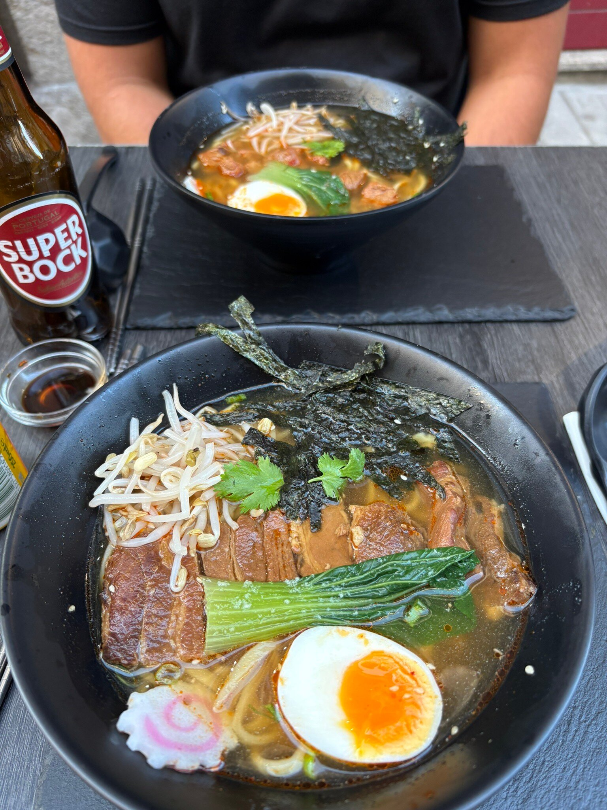

醤油
🍜
Clássico
Shoyu Ramen
Caldo de galinha apurado durante 12 horas com molho de soja, noodles artesanais, ovo marinado e cebolinho.
O melhor ramen de Braga — caldos profundos, sabores que ficam.
O Mid Town Ramen nasceu da paixão pela culinária japonesa e pelo desejo de trazer à cidade de Braga um ramen verdadeiro — feito com paciência, caldos cozinhados durante horas e ingredientes cuidadosamente selecionados.
Num espaço acolhedor na Praceta do Vilar, cada taça é uma experiência: o vapor que sobe, o aroma intenso do caldo, os noodles elásticos e as coberturas que completam uma refeição de conforto a sério.
Com mais de 228 avaliações positivas e uma classificação de 4.9★, somos reconhecidos pelos nossos clientes como o melhor ramen de Braga — e continuamos a trabalhar para merecer esse título todos os dias.

Mais de 228 avaliações verificadas — veja o que as pessoas estão a dizer.
★★★★★"Very good food and service. The best Ramen restaurant."
João restaurantguru.com · 5★
★★★★★"Very good and inexpensive food"
Juliana restaurantguru.com · 5★
★★★★★"Very cute hole in the wall that we found as we were walking by. Food was delicious! The server was very attentive."
Jelliott18 tripadvisor.com · 5★
Novidades, pratos do dia e bastidores da nossa cozinha — tudo em @mid_town_ramen
@mid_town_ramen